Chapter 14 Introduction to Regression
14.1 Simple Linear Regression
14.1.1 Tale of two variables
Regression
Statistical models to explore the relationship a response (dependent) variable and some explanatory (independent) variables.
Given values of explanatory variables, you can predict the values of the response variable.
Linear regression: The response variable is numeric.
Logistic regression: The response variable is logical.
Simple linear/logistic regression: There is only one explanatory variable.
14.1.1.1 Visualize two variables
Scatter plots are the standard way to visualize the relationship between two numeric variables
You’ll explore a Taiwan real estate dataset with 4 variables.
dist_to_mrt_station_m: Distance to nearest MRT metro station, in meters.n_convenience: No. of convenience stores in walking distance.house_age_years: The age of the house, in years, in 3 groups.price_twd_msq:House price per unit area, in New Taiwan dollars per meter squared.
Here, we’ll look at the relationship between house price per area and the number of nearby convenience stores.
library(tidyverse)
library(fst)## Warning: package 'fst' was built under R version 4.3.2# load dataset
taiwan_real_estate <- read_fst("data/taiwan_real_estate.fst")## Warning: package 'fstcore' was built under R version 4.3.2str(taiwan_real_estate)## 'data.frame': 414 obs. of 4 variables:
## $ dist_to_mrt_m : num 84.9 306.6 562 562 390.6 ...
## $ n_convenience : num 10 9 5 5 5 3 7 6 1 3 ...
## $ house_age_years: Ord.factor w/ 3 levels "0 to 15"<"15 to 30"<..: 3 2 1 1 1 1 3 2 3 2 ...
## $ price_twd_msq : num 11.5 12.8 14.3 16.6 13 ...# Draw a scatter plot of n_convenience vs. price_twd_msq
ggplot(taiwan_real_estate, aes(n_convenience, price_twd_msq)) +
# Make points 50% transparent
geom_point(alpha = 0.5) +
# Add a linear trend line without a confidence ribbon
geom_smooth(method = "lm", se = FALSE)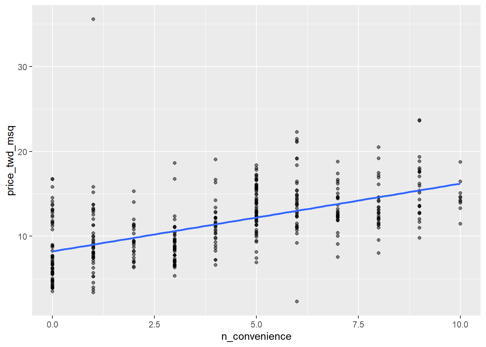
14.1.2 Fitting a linear regression
Regression lines
Equation
- y = intercept + slope ∗ x
Slope
- The amount the y value increases if you increase x by one.
Intercept
- The y value at the point when x is zero.
Syntax
lm(y ~ x, data)
Run a linear regression with price_twd_msq as the response variable, n_convenience as the explanatory variable.
# Run a linear regression of price_twd_msq vs. n_convenience
lm(price_twd_msq ~ n_convenience, data = taiwan_real_estate)##
## Call:
## lm(formula = price_twd_msq ~ n_convenience, data = taiwan_real_estate)
##
## Coefficients:
## (Intercept) n_convenience
## 8.224 0.798Interpretation:
price_twd_msq = 8.2242 + 0.7981 ∗ n_convenience
On average, a house with zero convenience stores nearby had a price of 8.2242 TWD per square meter.
If you increase the number of nearby convenience stores by one, then the expected increase in house price is 0.7981 TWD per square meter.
14.1.3 Categorical explanatory variables
14.1.3.1 Visualizing categorical
If the explanatory variable is categorical, the scatter plot that you used before to visualize the data doesn’t make sense. Instead, a good option is to draw a histogram for each category.
# Using taiwan_real_estate, plot price_twd_msq
ggplot(taiwan_real_estate, aes(price_twd_msq)) +
# Make it a histogram with 10 bins
geom_histogram(bins = 10) +
# Facet the plot so each house age group gets its own panel
facet_wrap(~ house_age_years)
It appears that new houses are the most expensive on average, and the medium aged ones (15 to 30 years) are the cheapest.
14.1.3.2 Calculating means by category
A good way to explore categorical variables is to calculate summary statistics such as the mean for each category.
summary_stats <- taiwan_real_estate %>%
# Group by house age
group_by(house_age_years) %>%
# Summarize to calculate the mean house price/area
summarise(mean_by_group = mean(price_twd_msq))
# See the result
summary_stats## # A tibble: 3 × 2
## house_age_years mean_by_group
## <ord> <dbl>
## 1 0 to 15 12.6
## 2 15 to 30 9.88
## 3 30 to 45 11.414.1.3.3 lm() & categorical explanatory variable
Linear regressions also work with categorical explanatory variables. In this case, the code to run the model is the same, but the coefficients returned by the model are different.
Run a linear regression with price_twd_msq as the response variable, house_age_years as the explanatory variable.
# Run a linear regression of price_twd_msq vs. house_age_years
mdl_price_vs_age <- lm(price_twd_msq ~ house_age_years, taiwan_real_estate)
# See the result
mdl_price_vs_age##
## Call:
## lm(formula = price_twd_msq ~ house_age_years, data = taiwan_real_estate)
##
## Coefficients:
## (Intercept) house_age_years.L house_age_years.Q
## 11.30 -0.88 1.75The intercept is the mean of the first group. The coefficients for each category are calculated relative to the intercept.
Update the model formula so that no intercept is included in the model.
# Update the model formula to remove the intercept
mdl_price_vs_age_no_intercept <- lm(
price_twd_msq ~ house_age_years + 0,
data = taiwan_real_estate
)
# See the result
mdl_price_vs_age_no_intercept##
## Call:
## lm(formula = price_twd_msq ~ house_age_years + 0, data = taiwan_real_estate)
##
## Coefficients:
## house_age_years0 to 15 house_age_years15 to 30 house_age_years30 to 45
## 12.64 9.88 11.39After adding 0 to intercept, the coefficients of the model are just the means of each category you calculated previously.
14.2 Predictions & model objects
14.2.1 Making predictions
Data on explanatory values to predict
If I set the explanatory variables to these values, what value would the response variable have?
explanatory_data <- tibble(
explanatory_var = some_values
)Predicting inside a data frame
explanatory_data %>%
mutate(
response_var = predict(model, explanatory_data)
)Extrapolating
Making predictions outside the range of observed data.
14.2.1.1 Predicting
Specify values for each of the explanatory variables, feed them to the model, and you get a prediction for the corresponding response variable.
Here, you’ll make predictions for the house prices versus number of convenience stores.
# fit model
mdl_price_vs_conv <- lm(price_twd_msq ~ n_convenience, data = taiwan_real_estate)
# Create a tibble with n_convenience column from zero to ten
explanatory_data <- tibble(n_convenience = 0:10)
# Use mdl_price_vs_conv to predict with explanatory_data
predict(mdl_price_vs_conv, explanatory_data)## 1 2 3 4 5 6 7 8 9 10 11
## 8.22 9.02 9.82 10.62 11.42 12.21 13.01 13.81 14.61 15.41 16.21# Edit this, so predictions are stored in prediction_data
prediction_data <- explanatory_data %>%
mutate(price_twd_msq = predict(mdl_price_vs_conv, explanatory_data))
# See the result
prediction_data## # A tibble: 11 × 2
## n_convenience price_twd_msq
## <int> <dbl>
## 1 0 8.22
## 2 1 9.02
## 3 2 9.82
## 4 3 10.6
## 5 4 11.4
## 6 5 12.2
## 7 6 13.0
## 8 7 13.8
## 9 8 14.6
## 10 9 15.4
## 11 10 16.214.2.1.2 Visualizing predictions
The prediction data you calculated contains a column of explanatory variable values and a column of response variable values. That means you can plot it on the same scatter plot of response versus explanatory data values.
# Add to the plot
ggplot(taiwan_real_estate, aes(n_convenience, price_twd_msq)) +
geom_point() +
geom_smooth(method = "lm", se = FALSE) +
# Add a point layer of prediction data, colored yellow
geom_point(data = prediction_data, color = "yellow")## `geom_smooth()` using formula = 'y ~ x'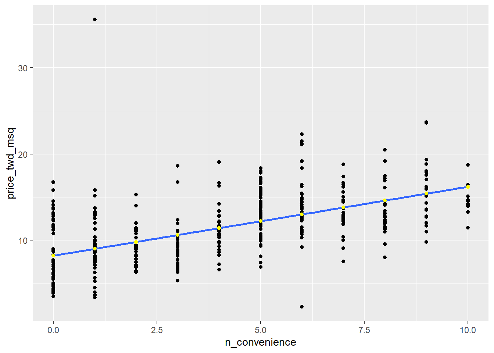
14.2.1.3 The limits of prediction
To test the limits of the model’s ability to predict, try some impossible situations. When there are -1, 2.5 convenience stores.
minus_one <- tibble(n_convenience = -1)
two_pt_five <- tibble(n_convenience = 2.5)
c(predict(mdl_price_vs_conv, minus_one), predict(mdl_price_vs_conv, two_pt_five))## 1 1
## 7.43 10.22Linear models don’t know what is possible or not in real life. That means that they can give you predictions that don’t make any sense when applied to your data.
You need to understand what your data means in order to determine whether a prediction is nonsense or not.
14.2.2 Working with model objects
14.2.2.1 Extracting model elements
The variable returned by lm() that contains the model object has many elements. In order to perform further analysis on the model results, you need to extract the useful bits of it.
The model coefficients, the fitted values, and the residuals are perhaps the most important bits of the linear model object.
coefficients(model)fitted(model): predictions on the original dataset.residuals(model): actual response values minus predicted response values.summary(model)broompackage: convert model objects to data frames for easier programming.tidy(): returns the coefficient level results.glance(): returns model-level results.augment(): returns observation level results.
# Get the model coefficients of mdl_price_vs_conv
coefficients(mdl_price_vs_conv)## (Intercept) n_convenience
## 8.224 0.798# Get the fitted values of mdl_price_vs_conv
fitted(mdl_price_vs_conv)## 1 2 3 4 5 6 7 8 9 10 11 12 13
## 16.21 15.41 12.21 12.21 12.21 10.62 13.81 13.01 9.02 10.62 9.02 15.41 12.21
## 14 15 16 17 18 19 20 21 22 23 24 25 26
## 11.42 11.42 9.82 13.01 9.02 14.61 13.81 10.62 13.81 9.02 13.81 11.42 9.82
## 27 28 29 30 31 32 33 34 35 36 37 38 39
## 12.21 12.21 11.42 12.21 8.22 13.81 9.02 13.01 13.81 8.22 9.82 9.02 13.01
## 40 41 42 43 44 45 46 47 48 49 50 51 52
## 12.21 8.22 8.22 12.21 13.01 11.42 14.61 15.41 10.62 8.22 9.02 11.42 9.02
## 53 54 55 56 57 58 59 60 61 62 63 64 65
## 10.62 12.21 12.21 8.22 14.61 13.81 9.02 12.21 9.82 13.01 10.62 11.42 8.22
## 66 67 68 69 70 71 72 73 74 75 76 77 78
## 14.61 13.01 12.21 13.01 12.21 15.41 10.62 14.61 8.22 16.21 9.02 10.62 10.62
## 79 80 81 82 83 84 85 86 87 88 89 90 91
## 9.82 9.02 11.42 13.01 13.81 10.62 13.81 15.41 9.02 8.22 8.22 8.22 9.02
## 92 93 94 95 96 97 98 99 100 101 102 103 104
## 8.22 11.42 8.22 12.21 12.21 15.41 10.62 12.21 15.41 11.42 9.02 13.01 13.01
## 105 106 107 108 109 110 111 112 113 114 115 116 117
## 13.01 13.01 14.61 9.02 9.82 10.62 12.21 13.81 10.62 13.01 14.61 9.82 9.02
## 118 119 120 121 122 123 124 125 126 127 128 129 130
## 8.22 10.62 12.21 12.21 12.21 11.42 8.22 13.81 13.01 11.42 12.21 13.01 13.81
## 131 132 133 134 135 136 137 138 139 140 141 142 143
## 14.61 10.62 12.21 14.61 13.01 8.22 12.21 13.01 8.22 12.21 12.21 10.62 12.21
## 144 145 146 147 148 149 150 151 152 153 154 155 156
## 12.21 9.02 12.21 8.22 14.61 8.22 14.61 13.81 15.41 9.02 13.01 8.22 8.22
## 157 158 159 160 161 162 163 164 165 166 167 168 169
## 8.22 11.42 12.21 11.42 14.61 10.62 8.22 12.21 8.22 9.02 13.01 14.61 12.21
## 170 171 172 173 174 175 176 177 178 179 180 181 182
## 9.02 8.22 12.21 15.41 11.42 13.81 10.62 8.22 15.41 11.42 9.02 8.22 14.61
## 183 184 185 186 187 188 189 190 191 192 193 194 195
## 10.62 8.22 8.22 10.62 10.62 8.22 14.61 8.22 14.61 9.82 13.81 12.21 8.22
## 196 197 198 199 200 201 202 203 204 205 206 207 208
## 12.21 9.82 14.61 13.81 14.61 8.22 12.21 10.62 12.21 9.02 10.62 16.21 10.62
## 209 210 211 212 213 214 215 216 217 218 219 220 221
## 9.02 14.61 12.21 9.02 9.82 15.41 10.62 14.61 9.02 13.01 12.21 14.61 15.41
## 222 223 224 225 226 227 228 229 230 231 232 233 234
## 8.22 16.21 8.22 13.01 13.01 8.22 14.61 8.22 8.22 10.62 8.22 9.02 15.41
## 235 236 237 238 239 240 241 242 243 244 245 246 247
## 11.42 13.81 16.21 8.22 8.22 8.22 9.82 13.81 10.62 14.61 10.62 12.21 13.01
## 248 249 250 251 252 253 254 255 256 257 258 259 260
## 8.22 8.22 9.02 13.81 8.22 15.41 9.82 12.21 9.02 9.02 9.02 13.01 8.22
## 261 262 263 264 265 266 267 268 269 270 271 272 273
## 11.42 10.62 12.21 10.62 13.81 11.42 10.62 12.21 12.21 8.22 9.02 14.61 12.21
## 274 275 276 277 278 279 280 281 282 283 284 285 286
## 9.02 13.81 13.81 12.21 10.62 13.01 10.62 13.01 15.41 9.02 9.82 13.81 10.62
## 287 288 289 290 291 292 293 294 295 296 297 298 299
## 15.41 12.21 13.01 12.21 8.22 13.81 12.21 13.81 13.01 10.62 11.42 11.42 8.22
## 300 301 302 303 304 305 306 307 308 309 310 311 312
## 16.21 11.42 8.22 10.62 8.22 10.62 12.21 9.02 8.22 12.21 8.22 9.82 11.42
## 313 314 315 316 317 318 319 320 321 322 323 324 325
## 15.41 12.21 13.01 9.82 13.81 9.82 16.21 12.21 8.22 11.42 9.02 13.01 9.82
## 326 327 328 329 330 331 332 333 334 335 336 337 338
## 14.61 13.81 10.62 10.62 8.22 8.22 8.22 9.82 12.21 12.21 13.01 9.82 12.21
## 339 340 341 342 343 344 345 346 347 348 349 350 351
## 15.41 12.21 8.22 9.82 15.41 14.61 8.22 8.22 9.82 9.02 13.01 12.21 12.21
## 352 353 354 355 356 357 358 359 360 361 362 363 364
## 10.62 10.62 10.62 9.02 12.21 9.02 15.41 13.01 8.22 16.21 14.61 11.42 16.21
## 365 366 367 368 369 370 371 372 373 374 375 376 377
## 13.81 11.42 9.02 9.82 9.02 10.62 12.21 12.21 13.81 9.02 12.21 8.22 9.82
## 378 379 380 381 382 383 384 385 386 387 388 389 390
## 14.61 14.61 13.01 12.21 15.41 8.22 11.42 8.22 16.21 8.22 10.62 11.42 14.61
## 391 392 393 394 395 396 397 398 399 400 401 402 403
## 15.41 9.02 13.01 11.42 9.02 11.42 9.02 11.42 9.82 9.02 12.21 10.62 9.02
## 404 405 406 407 408 409 410 411 412 413 414
## 15.41 12.21 13.01 13.81 8.22 10.62 8.22 15.41 13.81 12.21 15.41# Get the residuals of mdl_price_vs_conv
residuals(mdl_price_vs_conv)## 1 2 3 4 5 6 7 8
## -4.7376 -2.6384 2.0970 4.3663 0.8262 -0.9059 -1.6171 1.1174
## 9 10 11 12 13 14 15 16
## -3.3340 -3.9316 3.5042 2.1725 -0.3236 -4.2153 -1.0383 5.4595
## 17 18 19 20 21 22 23 24
## 8.1976 2.2939 -1.8101 0.6219 -1.7531 1.8019 -1.5790 0.6824
## 25 26 27 28 29 30 31 32
## 0.3232 -1.6510 4.7899 -2.0482 2.8043 5.0622 -1.5374 -6.2465
## 33 34 35 36 37 38 39 40
## 1.3256 1.9041 2.8609 0.0360 -2.8915 -1.3672 1.4200 1.7642
## 41 42 43 44 45 46 47 48
## -3.4133 -2.7174 -1.7154 -2.6950 4.8921 -3.0204 -2.6989 7.9897
## 49 50 51 52 53 54 55 56
## -4.1698 -5.0284 1.9571 -2.7591 -2.4490 -0.4446 3.4283 -4.0790
## 57 58 59 60 61 62 63 64
## -1.9311 2.3768 -2.1842 0.6144 -3.3756 6.1098 -2.2372 5.2249
## 65 66 67 68 69 70 71 72
## -0.5692 -1.2049 2.3277 4.9714 -2.0596 0.4934 2.4448 1.7265
## 73 74 75 76 77 78 79 80
## -3.6255 -2.1728 0.2549 -0.0964 0.5162 -2.8726 -0.8038 -1.0042
## 81 82 83 84 85 86 87 88
## 0.7771 -1.8781 0.7429 -5.2630 -0.5884 -0.0363 -0.8529 -2.6872
## 89 90 91 92 93 94 95 96
## 6.2992 -0.5692 4.7144 4.8469 -4.8205 -3.3528 0.1908 3.4586
## 97 98 99 100 101 102 103 104
## 2.5961 -0.1495 3.2165 3.4130 0.1417 0.9323 3.4472 0.8148
## 105 106 107 108 109 110 111 112
## -3.7843 8.4699 -0.3577 -0.9739 0.4973 -2.0254 3.3981 -1.8895
## 113 114 115 116 117 118 119 120
## -3.6291 -10.7132 1.5182 4.2189 -5.3309 -4.2908 -1.3598 5.8186
## 121 122 123 124 125 126 127 128
## -2.7441 2.3088 -1.5830 5.5428 3.5568 1.6923 7.6152 4.4268
## 129 130 131 132 133 134 135 136
## 5.3534 -1.4053 -3.2624 -1.3295 -0.8682 -2.6573 -0.2442 -1.9307
## 137 138 139 140 141 142 143 144
## 1.9457 1.3292 4.9376 0.6447 3.3376 -1.8741 -0.8682 -0.0815
## 145 146 147 148 149 150 151 152
## -0.4293 1.5524 7.5700 -1.5378 5.4218 -2.5968 0.8639 -1.8820
## 153 154 155 156 157 158 159 160
## -0.2780 -0.6375 -1.9610 -3.5041 -2.6872 -0.6450 -0.2933 -0.1004
## 161 162 163 164 165 166 167 168
## 2.8798 1.3634 -4.7144 4.5781 8.4777 0.2364 9.2566 -1.4773
## 169 170 171 172 173 174 175 176
## -0.8984 -1.9119 -3.8672 5.5766 2.1725 -0.7963 -0.1345 0.4254
## 177 178 179 180 181 182 183 184
## -2.4149 -2.6989 -0.3122 3.8672 -3.5344 2.3049 -3.4778 -2.5359
## 185 186 187 188 189 190 191 192
## -1.6282 -4.1132 -2.8424 -1.5677 -1.2049 -2.0215 -1.8101 1.6168
## 193 194 195 196 197 198 199 200
## -0.8910 2.7022 0.6411 -1.7456 1.2537 -0.0249 -1.9802 -5.0476
## 201 202 203 204 205 206 207 208
## -0.5087 1.6734 -1.0875 1.7339 -0.9739 -4.1434 -2.8919 -0.2705
## 209 210 211 212 213 214 215 216
## -1.0949 -2.2337 3.5796 4.1396 -0.4104 2.1422 -4.2947 -0.0552
## 217 218 219 220 221 222 223 224
## 2.9898 -0.6678 1.0380 -2.4455 8.2844 3.4248 -1.5303 4.5746
## 225 226 227 228 229 230 231 232
## 0.9056 1.8133 -4.3513 -2.4455 5.8756 -2.4754 -0.5126 -3.7764
## 233 234 235 236 237 238 239 240
## -3.7576 -5.6036 -4.1851 -1.9197 2.5242 3.5761 4.0602 0.7621
## 241 242 243 244 245 246 247 248
## -1.1063 -1.2843 -0.5126 -0.0249 -4.0527 0.1303 -0.7283 -1.2348
## 249 250 251 252 253 254 255 256
## -1.4769 -4.4837 -4.7336 -4.0487 0.5386 -1.9838 3.4586 -3.7576
## 257 258 259 260 261 262 263 264
## -1.0042 4.2606 6.1401 0.4898 -2.1276 -3.2357 3.8217 -1.0269
## 265 266 267 268 269 270 271 272
## -1.5264 0.1114 -3.4475 0.2211 -0.0815 -1.2651 26.5299 -6.5907
## 273 274 275 276 277 278 279 280
## 0.0395 -0.1570 -1.4053 1.2270 -1.9272 -2.2372 0.3004 -1.2085
## 281 282 283 284 285 286 287 288
## 0.7240 -1.8517 -1.2765 -2.7100 -3.4023 6.1137 1.6278 -2.2600
## 289 290 291 292 293 294 295 296
## 2.4184 1.2498 2.9709 2.6491 -4.8016 -0.9515 -1.4847 -4.0224
## 297 298 299 300 301 302 303 304
## -1.0989 -2.7933 -3.1713 -2.2565 -0.2517 2.5776 -3.5988 3.3945
## 305 306 307 308 309 310 311 312
## -1.7229 4.4268 6.1668 -0.7507 3.8217 -2.4451 -2.3469 1.3520
## 313 314 315 316 317 318 319 320
## 8.1937 0.7354 -0.4257 -1.5602 -1.1028 1.5260 -1.1370 -4.0755
## 321 322 323 324 325 326 327 328
## -2.5964 -0.0096 0.9928 -0.1534 -0.3499 -3.0809 4.9789 0.4859
## 329 330 331 332 333 334 335 336
## -3.4778 -2.4149 -4.3513 -3.5041 2.1614 -0.5959 -5.3160 -1.9688
## 337 338 339 340 341 342 343 344
## 0.9512 -2.8652 -4.4236 3.0350 4.7561 1.3748 0.7806 -0.5090
## 345 346 347 348 349 350 351 352
## 4.2417 3.2432 -0.5012 -5.6335 3.2354 2.0062 0.5842 -1.9649
## 353 354 355 356 357 358 359 360
## -2.8424 -1.1480 0.0851 6.1515 4.6842 -1.8215 0.6333 -0.7507
## 361 362 363 364 365 366 367 368
## -1.9539 4.5439 0.6863 -1.6816 -3.7957 -2.4907 -1.5185 -3.4966
## 369 370 371 372 373 374 375 376
## 4.0185 -3.7198 0.5236 3.4283 -1.2541 6.7719 2.7627 -1.0230
## 377 378 379 380 381 382 383 384
## -0.5920 2.5772 -3.2927 8.0765 3.9124 -1.0953 0.6411 0.7771
## 385 386 387 388 389 390 391 392
## -4.3211 -2.1052 8.5080 -2.8726 -3.1563 5.8752 -3.7277 0.4482
## 393 394 395 396 397 398 399 400
## -2.3319 0.7771 -1.5488 1.4427 0.6297 -1.6737 -2.8612 2.2636
## 401 402 403 404 405 406 407 408
## -1.4733 -2.2372 -0.3990 -3.3949 0.2513 -1.7570 -1.5566 -1.4769
## 409 410 411 412 413 414
## -2.1162 -3.5646 -0.2784 -1.5264 3.6704 3.9274# Print a summary of mdl_price_vs_conv
summary(mdl_price_vs_conv)##
## Call:
## lm(formula = price_twd_msq ~ n_convenience, data = taiwan_real_estate)
##
## Residuals:
## Min 1Q Median 3Q Max
## -10.713 -2.221 -0.541 1.810 26.530
##
## Coefficients:
## Estimate Std. Error t value Pr(>|t|)
## (Intercept) 8.2242 0.2850 28.9 <0.0000000000000002 ***
## n_convenience 0.7981 0.0565 14.1 <0.0000000000000002 ***
## ---
## Signif. codes: 0 '***' 0.001 '**' 0.01 '*' 0.05 '.' 0.1 ' ' 1
##
## Residual standard error: 3.38 on 412 degrees of freedom
## Multiple R-squared: 0.326, Adjusted R-squared: 0.324
## F-statistic: 199 on 1 and 412 DF, p-value: <0.0000000000000002Working with individual pieces of the model is often more useful than working with the whole model object at once.
14.2.2.2 Manually predicting
You can manually calculate the predictions from the model coefficients. When making predictions in real life, it is better to use predict().
simple linear regression: response = intercept + slope * explanatory
# Get the coefficients of mdl_price_vs_conv
coeffs <- coefficients(mdl_price_vs_conv)
# Get the intercept
intercept <- coeffs[1]
# Get the slope
slope <- coeffs[2]
explanatory_data %>%
mutate(
# Manually calculate the predictions
price_twd_msq = intercept + slope * n_convenience
)## # A tibble: 11 × 2
## n_convenience price_twd_msq
## <int> <dbl>
## 1 0 8.22
## 2 1 9.02
## 3 2 9.82
## 4 3 10.6
## 5 4 11.4
## 6 5 12.2
## 7 6 13.0
## 8 7 13.8
## 9 8 14.6
## 10 9 15.4
## 11 10 16.2# Compare to the results from predict()
predict(mdl_price_vs_conv, explanatory_data)## 1 2 3 4 5 6 7 8 9 10 11
## 8.22 9.02 9.82 10.62 11.42 12.21 13.01 13.81 14.61 15.41 16.2114.2.2.3 Using broom
library(broom)
# Get the coefficient-level elements of the model
tidy(mdl_price_vs_conv)## # A tibble: 2 × 5
## term estimate std.error statistic p.value
## <chr> <dbl> <dbl> <dbl> <dbl>
## 1 (Intercept) 8.22 0.285 28.9 5.81e-101
## 2 n_convenience 0.798 0.0565 14.1 3.41e- 37# Get the observation-level elements of the model
augment(mdl_price_vs_conv)## # A tibble: 414 × 8
## price_twd_msq n_convenience .fitted .resid .hat .sigma .cooksd .std.resid
## <dbl> <dbl> <dbl> <dbl> <dbl> <dbl> <dbl> <dbl>
## 1 11.5 10 16.2 -4.74 0.0121 3.38 1.22e-2 -1.41
## 2 12.8 9 15.4 -2.64 0.00913 3.39 2.83e-3 -0.783
## 3 14.3 5 12.2 2.10 0.00264 3.39 5.10e-4 0.621
## 4 16.6 5 12.2 4.37 0.00264 3.38 2.21e-3 1.29
## 5 13.0 5 12.2 0.826 0.00264 3.39 7.92e-5 0.244
## 6 9.71 3 10.6 -0.906 0.00275 3.39 9.91e-5 -0.268
## 7 12.2 7 13.8 -1.62 0.00477 3.39 5.50e-4 -0.479
## 8 14.1 6 13.0 1.12 0.00343 3.39 1.88e-4 0.331
## 9 5.69 1 9.02 -3.33 0.00509 3.38 2.49e-3 -0.988
## 10 6.69 3 10.6 -3.93 0.00275 3.38 1.87e-3 -1.16
## # ℹ 404 more rows# Get the model-level elements of the model
glance(mdl_price_vs_conv)## # A tibble: 1 × 12
## r.squared adj.r.squared sigma statistic p.value df logLik AIC BIC
## <dbl> <dbl> <dbl> <dbl> <dbl> <dbl> <dbl> <dbl> <dbl>
## 1 0.326 0.324 3.38 199. 3.41e-37 1 -1091. 2188. 2200.
## # ℹ 3 more variables: deviance <dbl>, df.residual <int>, nobs <int>14.2.3 Regression to the mean
Response value = fitted value + residual
- “The stuff you explained” + “the stuff you couldn’t explain”
Residuals exist due to problems in the model and fundamental randomness
Extreme cases are often due to randomness
Regression to the mean means extreme cases don’t persist over time
14.2.3.1 Plotting
Here you’ll look at the annual returns from investing in companies in the Standard and Poor 500 index (S&P 500), in 2018 and 2019.
| variable | meaning |
|---|---|
| symbol | Stock ticker symbol uniquely identifying the company. |
| return_2018 | A measure of investment performance in 2018. |
| return_2019 | A measure of investment performance in 2019. |
A positive number for the return means the investment increased in value; negative means it lost value.
A naive prediction might be that the investment performance stays the same from year to year, lying on the “y equals x” line.
sp500_yearly_returns <- read_tsv("data/sp500_yearly_returns.txt")
sp500_yearly_returns## # A tibble: 384 × 3
## symbol return_2018 return_2019
## <chr> <dbl> <dbl>
## 1 MSFT 0.208 0.576
## 2 AAPL -0.0539 0.890
## 3 AMZN 0.284 0.230
## 4 FB -0.257 0.566
## 5 GOOG -0.0103 0.291
## 6 JNJ -0.0513 0.162
## 7 V 0.165 0.433
## 8 JPM -0.0662 0.473
## 9 INTC 0.0423 0.307
## 10 MA 0.253 0.592
## # ℹ 374 more rowsgeom_abline(): ab means a and b in the syntax of a line: y = a + b*x
# Using sp500_yearly_returns, plot return_2019 vs. return_2018
ggplot(sp500_yearly_returns, aes(return_2018, return_2019)) +
# Make it a scatter plot
geom_point() +
# Add a line at y = x, colored green, size 1
geom_abline(color = "green", linewidth = 1) +
# Add a linear regression trend line, no std. error ribbon
geom_smooth(method = "lm", se = FALSE) +
# Fix the coordinate ratio, so distances along the x and y axes appear same.
coord_fixed()## `geom_smooth()` using formula = 'y ~ x'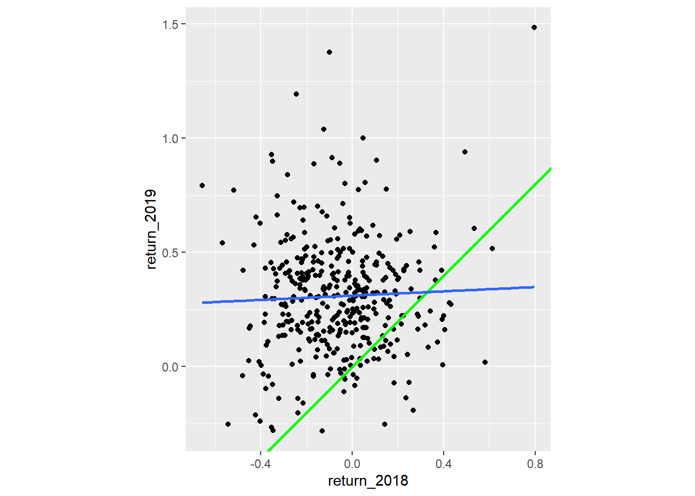
The regression trend line looks very different to the y equals x line. As the financial advisors say, “Past performance is no guarantee of future results.”
14.2.3.2 Modeling
Let’s quantify the relationship between returns in 2019 and 2018 by running a linear regression and making predictions.
By looking at companies with extremely high or extremely low returns in 2018, we can see if their performance was similar in 2019.
# Run a linear regression on return_2019 vs. return_2018 using sp500_yearly_returns
mdl_returns <- lm(
return_2019 ~ return_2018,
data = sp500_yearly_returns
)
mdl_returns##
## Call:
## lm(formula = return_2019 ~ return_2018, data = sp500_yearly_returns)
##
## Coefficients:
## (Intercept) return_2018
## 0.3113 0.0469# Create a data frame with return_2018 at -1, 0, and 1
explanatory_data <- tibble(return_2018 = c(-1, 0, 1))
# Use mdl_returns to predict with explanatory_data
predict_invest <- explanatory_data %>%
mutate(predict_return_2019 = predict(mdl_returns, explanatory_data))
predict_invest## # A tibble: 3 × 2
## return_2018 predict_return_2019
## <dbl> <dbl>
## 1 -1 0.264
## 2 0 0.311
## 3 1 0.358Investments that gained a lot in value in 2018 on average gained only a small amount in 2019. Similarly, investments that lost a lot of value in 2018 on average also gained a small amount in 2019.
14.2.4 Transforming variables
14.2.4.1 Transform explanatory variable
If there is no straight line relationship between the response variable and the explanatory variable, it is sometimes possible to create one by transforming one or both of the variables.
You’ll take another look at taiwan_real_estate, this time using the distance to the nearest MRT (metro) station as the explanatory variable. Shortening the distance to the metro station by taking the square root.
# Run the code to see the plot
ggplot(taiwan_real_estate, aes(dist_to_mrt_m, price_twd_msq)) +
geom_point() +
geom_smooth(method = "lm", se = FALSE)## `geom_smooth()` using formula = 'y ~ x'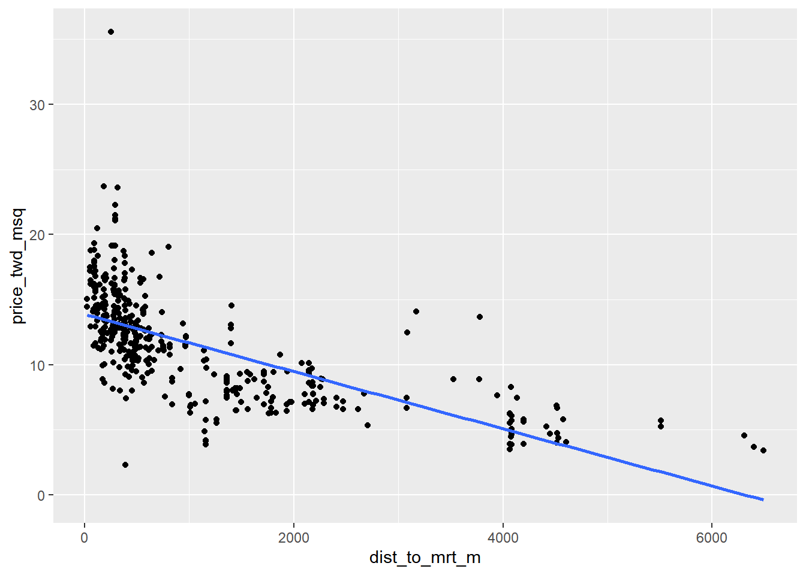
Notice how the numbers on the x-axis have changed.
# Edit so x-axis is square root of dist_to_mrt_m
ggplot(taiwan_real_estate, aes(sqrt(dist_to_mrt_m), price_twd_msq)) +
geom_point() +
geom_smooth(method = "lm", se = FALSE)## `geom_smooth()` using formula = 'y ~ x'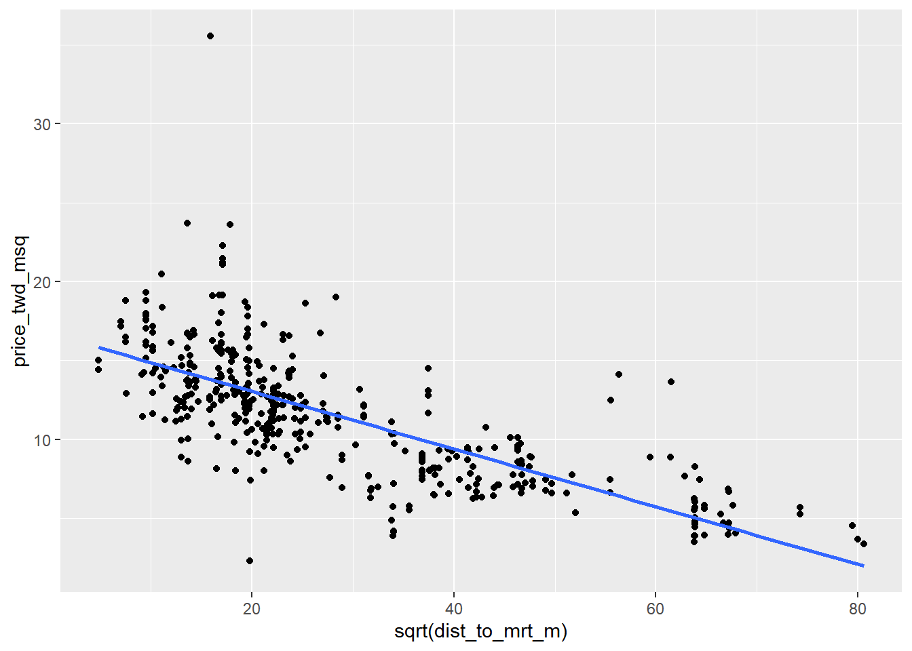
# Run a linear regression of price_twd_msq vs. square root of dist_to_mrt_m using taiwan_real_estate
mdl_price_vs_dist <- lm(
price_twd_msq ~ sqrt(dist_to_mrt_m),
data = taiwan_real_estate
)
# See the result
mdl_price_vs_dist##
## Call:
## lm(formula = price_twd_msq ~ sqrt(dist_to_mrt_m), data = taiwan_real_estate)
##
## Coefficients:
## (Intercept) sqrt(dist_to_mrt_m)
## 16.710 -0.183explanatory_data <- tibble(
dist_to_mrt_m = seq(0, 80, 10) ^ 2
)
# Use mdl_price_vs_dist to predict explanatory_data
prediction_data <- explanatory_data %>%
mutate(price_twd_msq = predict(mdl_price_vs_dist, explanatory_data))
# See the result
prediction_data## # A tibble: 9 × 2
## dist_to_mrt_m price_twd_msq
## <dbl> <dbl>
## 1 0 16.7
## 2 100 14.9
## 3 400 13.1
## 4 900 11.2
## 5 1600 9.40
## 6 2500 7.57
## 7 3600 5.74
## 8 4900 3.91
## 9 6400 2.08ggplot(taiwan_real_estate, aes(sqrt(dist_to_mrt_m), price_twd_msq)) +
geom_point() +
geom_smooth(method = "lm", se = FALSE) +
# Add points from prediction_data, colored green, size 5
geom_point(data = prediction_data, color = "green", size = 5)## `geom_smooth()` using formula = 'y ~ x'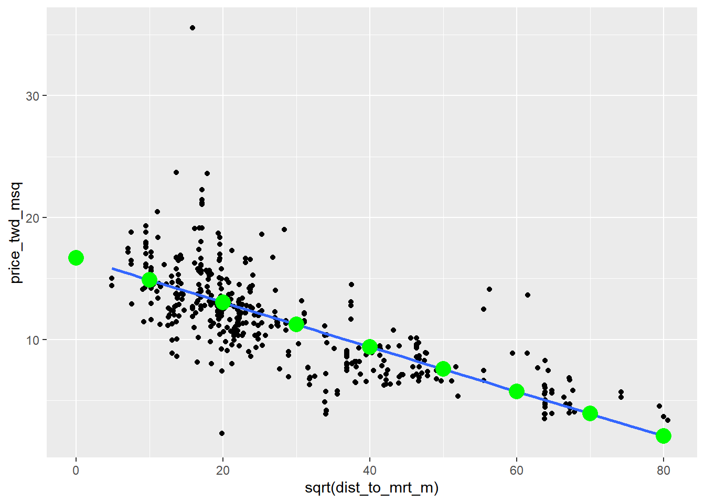
By transforming the explanatory variable, the relationship with the response variable became linear, and so a linear regression became an appropriate model.
14.2.4.2 Transform response variable
The response variable can be transformed too, but this means you need an extra step at the end to undo that transformation.
Undoing the transformation of the response is called backtransformation the predictions.
Determining how many people click on the advert after seeing it in ad_conversion.
ad_conversion <- read_fst("data/ad_conversion.fst")
glimpse(ad_conversion)## Rows: 936
## Columns: 3
## $ spent_usd <dbl> 1.43, 1.82, 1.25, 1.29, 4.77, 1.27, 1.50, 3.16, 10.28, 0…
## $ n_impressions <dbl> 7350, 17861, 4259, 4133, 15615, 10951, 2355, 9502, 14669…
## $ n_clicks <dbl> 1, 2, 1, 1, 3, 1, 1, 3, 7, 1, 1, 4, 2, 2, 2, 2, 4, 2, 7,…# Run the code to see the plot
ggplot(ad_conversion, aes(n_impressions, n_clicks)) +
geom_point() +
geom_smooth(method = "lm", se = FALSE)## `geom_smooth()` using formula = 'y ~ x'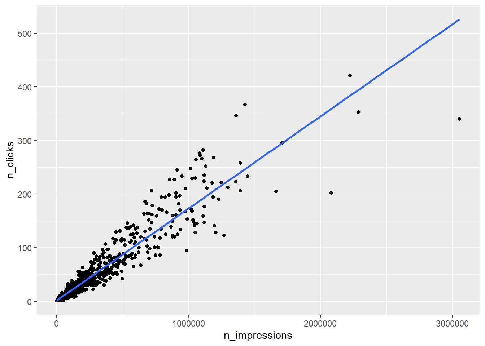
# Edit to raise x, y aesthetics to power 0.25
ggplot(ad_conversion, aes(n_impressions ^ 0.25, n_clicks ^ 0.25)) +
geom_point() +
geom_smooth(method = "lm", se = FALSE)## `geom_smooth()` using formula = 'y ~ x'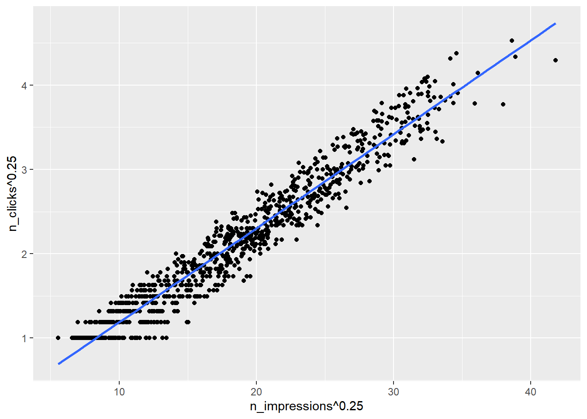
Each variable in the formula needs to be specified “as is”, using I().
# Run a linear regression of n_clicks to the power 0.25 vs. n_impressions to the power 0.25 using ad_conversion
mdl_click_vs_impression <- lm(
I(n_clicks^0.25) ~ I(n_impressions^0.25),
data = ad_conversion
)
mdl_click_vs_impression##
## Call:
## lm(formula = I(n_clicks^0.25) ~ I(n_impressions^0.25), data = ad_conversion)
##
## Coefficients:
## (Intercept) I(n_impressions^0.25)
## 0.0717 0.1115Back transform by raising n_clicks_025 to the power 4 to get n_clicks.
explanatory_data <- tibble(
n_impressions = seq(0, 3e6, 5e5)
)
prediction_data <- explanatory_data %>%
mutate(
# Use mdl_click_vs_impression to predict n_clicks ^ 0.25
n_clicks_025 = predict(mdl_click_vs_impression, explanatory_data),
# Back transform to get n_clicks
n_clicks = n_clicks_025 ^ 4
)
prediction_data## # A tibble: 7 × 3
## n_impressions n_clicks_025 n_clicks
## <dbl> <dbl> <dbl>
## 1 0 0.0717 0.0000265
## 2 500000 3.04 85.1
## 3 1000000 3.60 168.
## 4 1500000 3.97 250.
## 5 2000000 4.27 331.
## 6 2500000 4.51 413.
## 7 3000000 4.71 494.ggplot(ad_conversion, aes(n_impressions ^ 0.25, n_clicks ^ 0.25)) +
geom_point() +
geom_smooth(method = "lm", se = FALSE) +
# Add points from prediction_data, colored green
geom_point(data = prediction_data, color = "green", size = 3)## `geom_smooth()` using formula = 'y ~ x'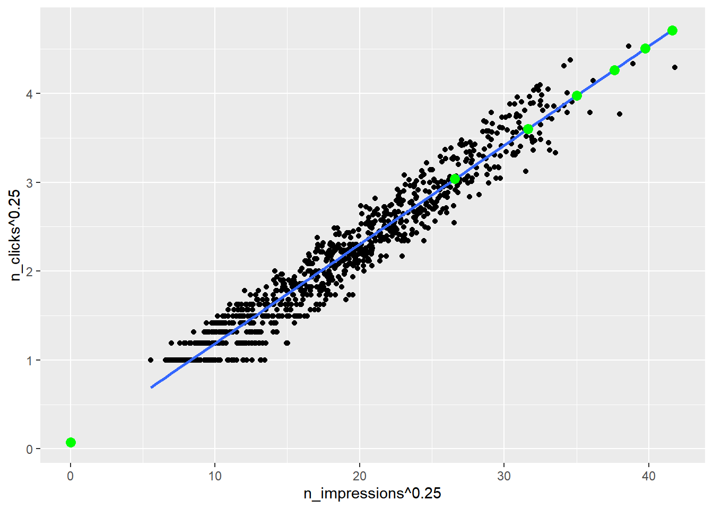
14.3 Assessing model fit
14.3.1 Quantifying model fit
Metrics to know whether or not predictions from your model are nonsense:
r-squared / Coefficient of determination
The proportion of the variance in the response variable that is predictable from the
explanatory variable.
0 = perfect fit ~ 1 = worst possible fit
Is correlation squared
Residual standard error (RSE)
A “typical” di(erence between a prediction and an observed response.
It has the same unit as the response variable.
Root-mean-square error (RMSE)
It performs the same task as RSE, namely quantifying how inaccurate the model predictions are, but is worse for comparisons between models.
You need to be aware that RMSE exists, but typically you should use RSE instead.
14.3.1.1 Coefficient of determination
The coefficient of determination is a measure of how well the linear regression line fits the observed values. For simple linear regression, it is equal to the square of the correlation between the explanatory and response variables.
# modeling the click response to impressions
mdl_click_vs_impression_orig <- lm(formula = n_clicks ~ n_impressions, data = ad_conversion)
# modeling the click response to impressions, with transform
mdl_click_vs_impression_trans <- lm(formula = I(n_clicks^0.25) ~ I(n_impressions^0.25), data = ad_conversion)# Print a summary of mdl_click_vs_impression_orig
summary(mdl_click_vs_impression_orig)##
## Call:
## lm(formula = n_clicks ~ n_impressions, data = ad_conversion)
##
## Residuals:
## Min 1Q Median 3Q Max
## -186.10 -5.39 -1.42 2.07 119.88
##
## Coefficients:
## Estimate Std. Error t value Pr(>|t|)
## (Intercept) 1.68289597 0.78881511 2.13 0.033 *
## n_impressions 0.00017183 0.00000196 87.65 <0.0000000000000002 ***
## ---
## Signif. codes: 0 '***' 0.001 '**' 0.01 '*' 0.05 '.' 0.1 ' ' 1
##
## Residual standard error: 19.9 on 934 degrees of freedom
## Multiple R-squared: 0.892, Adjusted R-squared: 0.891
## F-statistic: 7.68e+03 on 1 and 934 DF, p-value: <0.0000000000000002# Print a summary of mdl_click_vs_impression_trans
summary(mdl_click_vs_impression_trans)##
## Call:
## lm(formula = I(n_clicks^0.25) ~ I(n_impressions^0.25), data = ad_conversion)
##
## Residuals:
## Min 1Q Median 3Q Max
## -0.5706 -0.1323 0.0058 0.1449 0.4689
##
## Coefficients:
## Estimate Std. Error t value Pr(>|t|)
## (Intercept) 0.071748 0.017202 4.17 0.000033 ***
## I(n_impressions^0.25) 0.111533 0.000884 126.11 < 0.0000000000000002 ***
## ---
## Signif. codes: 0 '***' 0.001 '**' 0.01 '*' 0.05 '.' 0.1 ' ' 1
##
## Residual standard error: 0.197 on 934 degrees of freedom
## Multiple R-squared: 0.945, Adjusted R-squared: 0.944
## F-statistic: 1.59e+04 on 1 and 934 DF, p-value: <0.0000000000000002Use dplyr’s pull() function to pull out specific value.
Get the coefficient of determination by glancing at the model, then pulling the r.squared value.
# Get coeff of determination for mdl_click_vs_impression_orig
mdl_click_vs_impression_orig %>%
# Get the model-level details
glance() %>%
# Pull out r.squared
pull(r.squared)## [1] 0.892# Do the same for the transformed model
mdl_click_vs_impression_trans %>%
# Get the model-level details
glance() %>%
# Pull out r.squared
pull(r.squared)## [1] 0.945The number of impressions explains 89% of the variability in the number of clicks.
The transformed model has a higher coefficient of determination that the original model, suggesting that it gives a better fit to the data.
14.3.1.2 Residual standard error
Residual standard error (RSE) is a measure of the typical size of the residuals. Equivalently, it’s a measure of how badly wrong you can expect predictions to be.
Smaller numbers are better, with zero being a perfect fit to the data.
# Get RSE for mdl_click_vs_impression_orig
mdl_click_vs_impression_orig %>%
# Get the model-level details
glance() %>%
# Pull out sigma
pull(sigma)## [1] 19.9# Do the same for the transformed model
mdl_click_vs_impression_trans %>%
# Get the model-level details
glance() %>%
# Pull out sigma
pull(sigma)## [1] 0.197The typical difference between predicted number of clicks and observed number of clicks is 20.
RSE is a measure of accuracy for regression models, so you can compare accuracy across different classes of models.
14.3.2 Visualizing model fit
Hoped for properties of residuals
Residuals are normally distributed
The mean of the residuals is zero
Diagnostic plots
Residuals vs. fitted values
- In a good model, the residuals should have a trend line close to zero.
Q-Q plot
Shows whether or not the residuals follow a normal distribution.
If the residuals from the model are normally distributed, then the points will track the line on the Q-Q plot.
Scale-location
Show the size of residuals versus fitted values.
In a good model, the size of the residuals shouldn’t change much as the fitted values change.
14.3.2.1 Drawing diagnostic plots
autoplot(model, which = int) lets you specify which diagnostic plots you are interested in.
1residuals vs. fitted values2Q-Q plot3scale-location
These three diagnostic plots are excellent for sanity-checking the quality of your models.
library(ggfortify)## Warning: package 'ggfortify' was built under R version 4.3.2# Plot the three diagnostics for mdl_price_vs_conv
autoplot(mdl_price_vs_conv, which = 1:3, nrow = 1, ncol = 3)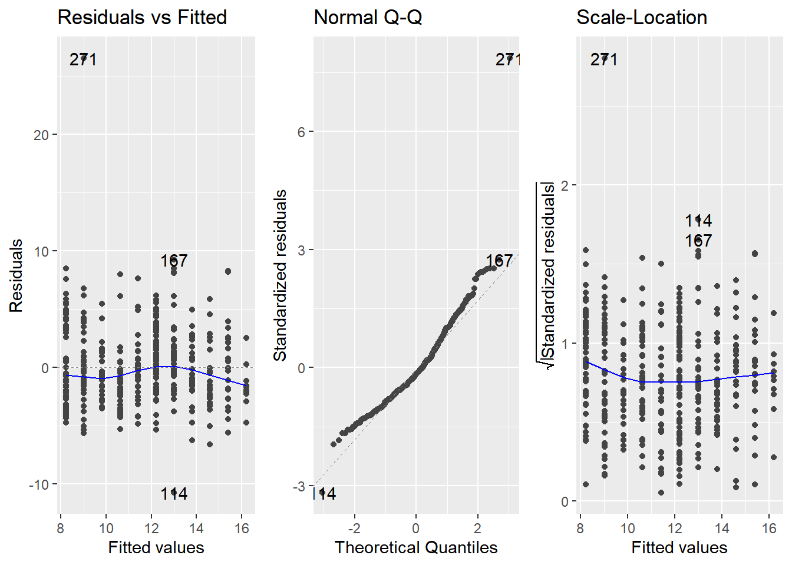
14.3.3 Outliers, leverage, influence
Leverage and influence are important concepts for determining your model is overly affected by some unusual data points.
Leverage
A measure of how extreme the explanatory variable values are.
Highly leveraged points are the ones with explanatory variables that are furthest away from the others.
The
.hatcolumn (in augment()) orhatvalues()
Influence
Measures how much the model would change if you left the observation out of the dataset when modeling.
- It measures how different the prediction line would look if you ran a linear regression on all data points except that point, compared to running a linear regression on the whole dataset.
Cook’s distance is the standard metric for influence
which calculates influence based on the size of the residual and the leverage of the point.
cooks.distance()or.cooksdcolumn.
Outlier diagnostic plots
autoplot(model, which = 4:6)
14.3.3.1 Extracting leverage & influence
Now you’ll extract those values from an augmented version of the model.
# leverage
mdl_price_vs_dist %>%
# Augment the model
augment() %>%
# Arrange rows by descending leverage
arrange(desc(.hat)) %>%
# Get the head of the dataset
head()## # A tibble: 6 × 8
## price_twd_msq `sqrt(dist_to_mrt_m)` .fitted .resid .hat .sigma .cooksd
## <dbl> <dbl> <dbl> <dbl> <dbl> <dbl> <dbl>
## 1 3.39 80.5 1.98 1.41 0.0267 2.82 0.00351
## 2 3.69 80.0 2.09 1.60 0.0261 2.82 0.00447
## 3 4.54 79.4 2.19 2.35 0.0256 2.82 0.00937
## 4 5.69 74.2 3.13 2.55 0.0211 2.82 0.00906
## 5 5.26 74.2 3.13 2.13 0.0211 2.82 0.00630
## 6 4.05 67.9 4.30 -0.247 0.0163 2.82 0.0000644
## # ℹ 1 more variable: .std.resid <dbl># influence, cook distance
mdl_price_vs_dist %>%
# Augment the model
augment() %>%
# Arrange rows by descending Cook's distance
arrange(desc(.cooksd)) %>%
# Get the head of the dataset
head()## # A tibble: 6 × 8
## price_twd_msq `sqrt(dist_to_mrt_m)` .fitted .resid .hat .sigma .cooksd
## <dbl> <dbl> <dbl> <dbl> <dbl> <dbl> <dbl>
## 1 35.6 15.9 13.8 21.7 0.00385 2.61 0.116
## 2 13.6 61.5 5.47 8.18 0.0121 2.79 0.0524
## 3 14.1 56.3 6.41 7.69 0.00933 2.80 0.0354
## 4 23.7 13.7 14.2 9.48 0.00440 2.78 0.0251
## 5 2.30 19.8 13.1 -10.8 0.00310 2.77 0.0228
## 6 23.6 17.8 13.4 10.2 0.00344 2.78 0.0225
## # ℹ 1 more variable: .std.resid <dbl>Plot the three outlier diagnostic plots.
# Plot the three outlier diagnostics for mdl_price_vs_dist
autoplot(mdl_price_vs_dist, which = 4:6, nrow = 1, ncol = 3)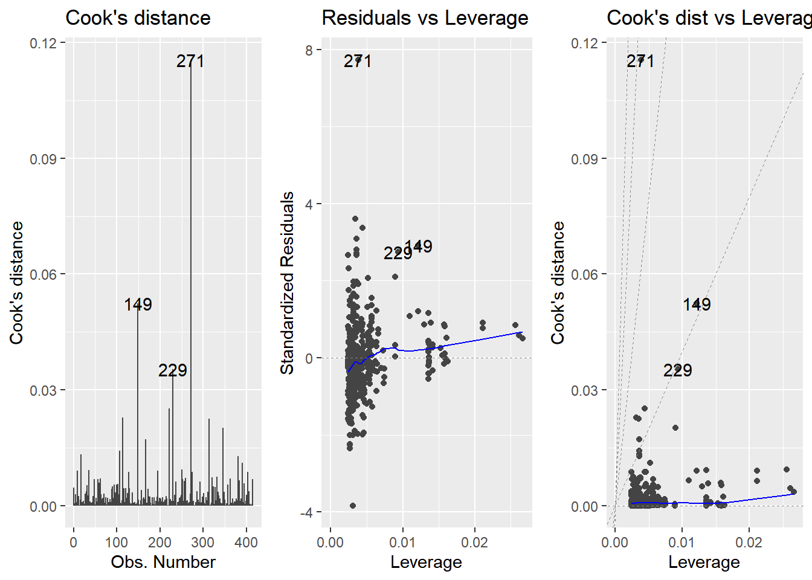
14.4 Simple logistic regression
14.4.1 Why need logistic regression
Another type of generalized linear model.
Used when the response variable is logical.
The responses follow logistic (S-shaped) curve.
glm()with binomial familyglm(y \~ x, data, family = binomial)Linear regression using
glm():glm(y \~ x, data, family = gaussian)
14.4.1.1 Exploring explanatory variables
Use a histogram of the explanatory variable, faceted on the response.
churn <- read_fst("data/churn.fst")
str(churn)## 'data.frame': 400 obs. of 3 variables:
## $ has_churned : int 0 0 0 0 0 0 0 0 0 0 ...
## $ time_since_first_purchase: num -1.0892 1.183 -0.8462 0.0869 -1.1666 ...
## $ time_since_last_purchase : num -0.721 3.634 -0.428 -0.536 -0.673 ...# Using churn, plot time_since_last_purchase
ggplot(churn, aes(time_since_last_purchase)) +
# as a histogram with binwidth 0.25
geom_histogram(binwidth = 0.25) +
# faceted in a grid with has_churned on each row
facet_grid(vars(has_churned))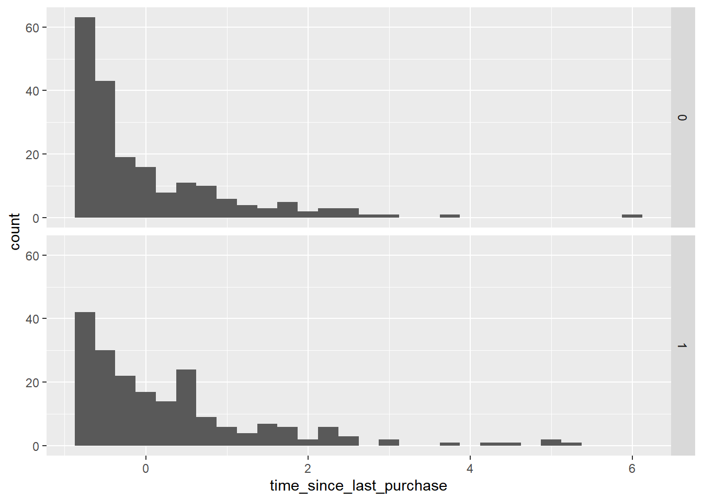
The distribution of churned customers was further right than the distribution of non-churned customers (churners typically have a longer time since their last purchase).
# Redraw the plot with time_since_first_purchase
ggplot(churn, aes(time_since_first_purchase)) +
geom_histogram(binwidth = 0.25) +
facet_grid(vars(has_churned))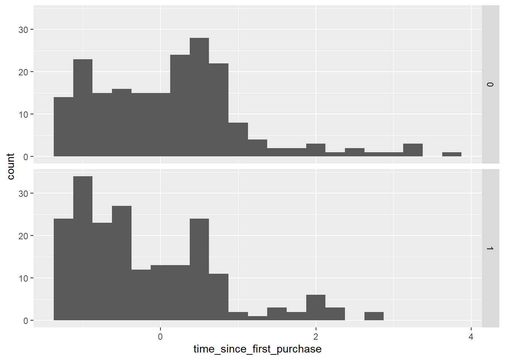
churners have a shorter length of relationship.
14.4.1.2 Visualizing logistic models
To see how the predictions differ for linear and logistic regressions, try drawing both trend lines side by side.
You should see a linear (straight line) trend from the linear model, and a logistic (S-shaped) trend from the logistic model.
geom_smooth(method = "glm", method.args = list(family = "binomial"))
# Using churn plot has_churned vs. time_since_first_purchase
ggplot(churn, aes(time_since_first_purchase, has_churned)) +
# Make it a scatter plot
geom_point() +
# Add an lm trend line, no std error ribbon, colored red
geom_smooth(method = "lm", se = FALSE, color = "red") +
# Add a glm trend line, no std error ribbon, binomial family
geom_smooth(method = "glm",
method.args = list(family = "binomial"),
se = FALSE)## `geom_smooth()` using formula = 'y ~ x'
## `geom_smooth()` using formula = 'y ~ x'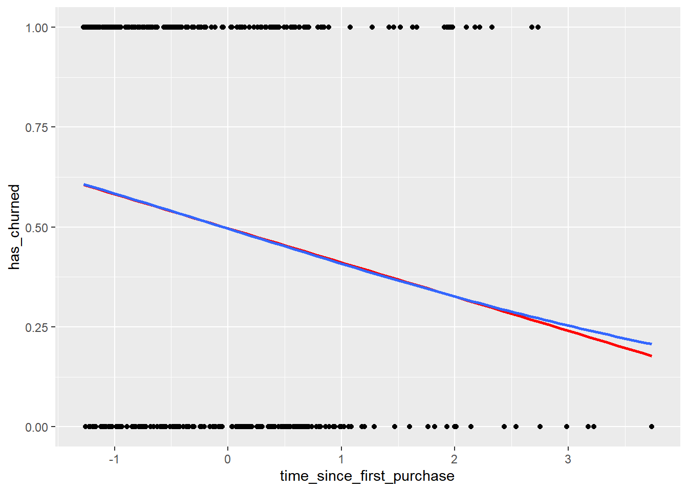
The two models give similar predictions in some places, but notice the slight curve in the logistic model trend.
14.4.1.3 Logistic regression with glm()
Linear regression and logistic regression are special cases of a broader type of models called generalized linear models (“GLMs”).
A linear regression makes the assumption that the residuals follow a Gaussian (normal) distribution.
By contrast, a logistic regression assumes that residuals follow a binomial distribution.
# Fit a logistic regression of churn vs. length of relationship using the churn dataset
mdl_churn_vs_relationship <- glm(
has_churned ~ time_since_first_purchase,
churn,
family = binomial)
# See the result
mdl_churn_vs_relationship##
## Call: glm(formula = has_churned ~ time_since_first_purchase, family = binomial,
## data = churn)
##
## Coefficients:
## (Intercept) time_since_first_purchase
## -0.0152 -0.3548
##
## Degrees of Freedom: 399 Total (i.e. Null); 398 Residual
## Null Deviance: 555
## Residual Deviance: 544 AIC: 54814.4.2 Predictions & odds ratios
Making predictions
You also need to set the
typeargument to"response"to get the probabilities of response.predict(mdl_recency, explanatory_data, type = "response")
There are four main ways of expressing the prediction from a logistic regression model:

14.4.2.1 Probabilities
Firstly, since the response variable is either “yes” or “no”, you can make a prediction of the probability of a “yes”.
Here, you’ll calculate and visualize these probabilities.
# A data frame of explanatory values
explanatory_data <- tibble(time_since_first_purchase = seq(-1.5, 4, 0.25))
# a scatter plot of has_churned versus time_since_first_purchase with a smooth glm line
plt_churn_vs_relationship <- ggplot(churn, aes(time_since_first_purchase, has_churned)) +
geom_point() +
geom_smooth(method = "glm", method.args = list(family = binomial), se = F)Predict the probability of churning. Remember to set the prediction type.
# Make a data frame of predicted probabilities
prediction_data <- explanatory_data %>%
mutate(has_churned = predict(mdl_churn_vs_relationship,
explanatory_data,
type = "response"))
# See the result
prediction_data## # A tibble: 23 × 2
## time_since_first_purchase has_churned
## <dbl> <dbl>
## 1 -1.5 0.626
## 2 -1.25 0.605
## 3 -1 0.584
## 4 -0.75 0.562
## 5 -0.5 0.540
## 6 -0.25 0.518
## 7 0 0.496
## 8 0.25 0.474
## 9 0.5 0.452
## 10 0.75 0.430
## # ℹ 13 more rowsUpdate the plt_churn_vs_relationship plot to add points from prediction_data.
plt_churn_vs_relationship +
# Add points from prediction_data, colored yellow, size 2
geom_point(data = prediction_data, color = "yellow", size = 2)## `geom_smooth()` using formula = 'y ~ x'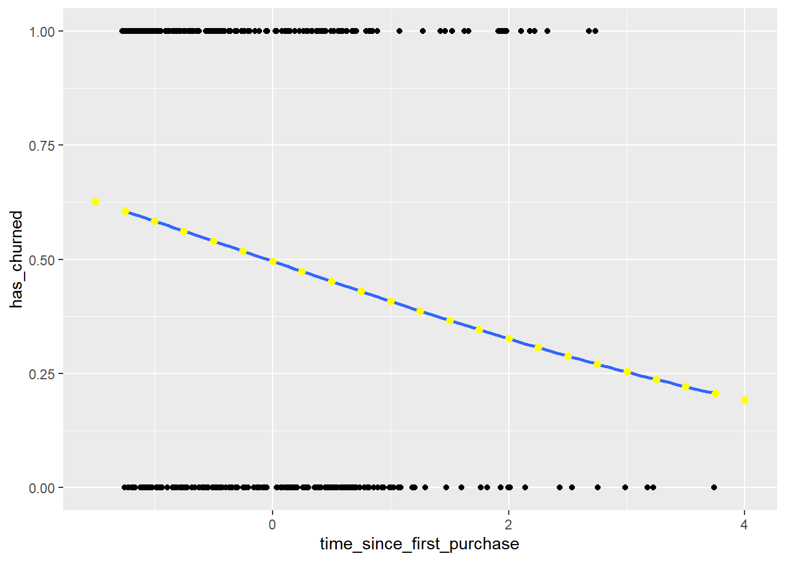
The probability of a positive response is a natural way of thinking about predictions.
14.4.2.2 Most likely outcome
When explaining your results to a non-technical audience, you may wish to side-step talking about probabilities and simply explain the most likely outcome.
That is, rather than saying there is a 60% chance of a customer churning, you say that the most likely outcome is that the customer will churn.
The tradeoff here is easier interpretation at the cost of nuance.
Cutoff probability = 0.5
# Update the data frame
prediction_data <- explanatory_data %>%
mutate(
has_churned = predict(mdl_churn_vs_relationship,
explanatory_data,
type = "response"),
# Add the most likely churn outcome, 四捨五入&無小數點
most_likely_outcome = round(has_churned, digits = 0)
)
# See the result
prediction_data## # A tibble: 23 × 3
## time_since_first_purchase has_churned most_likely_outcome
## <dbl> <dbl> <dbl>
## 1 -1.5 0.626 1
## 2 -1.25 0.605 1
## 3 -1 0.584 1
## 4 -0.75 0.562 1
## 5 -0.5 0.540 1
## 6 -0.25 0.518 1
## 7 0 0.496 0
## 8 0.25 0.474 0
## 9 0.5 0.452 0
## 10 0.75 0.430 0
## # ℹ 13 more rows# Update the plot
plt_churn_vs_relationship +
# Add most likely outcome points from prediction_data, colored yellow, size 2
geom_point(data = prediction_data,
aes(y = most_likely_outcome),
color = "yellow",
size = 2)## `geom_smooth()` using formula = 'y ~ x'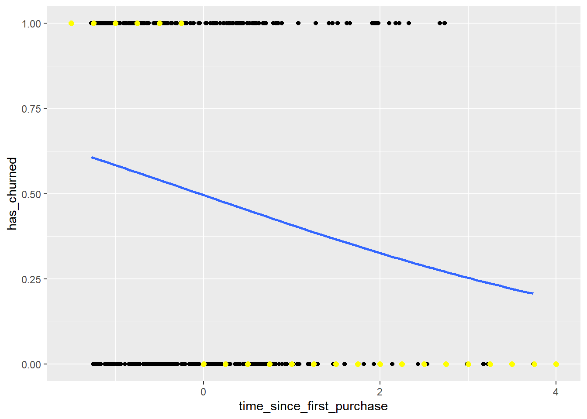
14.4.2.3 Odds ratios
Odds ratios compare the probability of something happening with the probability of it not happening.

This is sometimes easier to reason about than probabilities, particularly when you want to make decisions about choices.
For example, if a customer has a 20% chance of churning, it maybe more intuitive to say “the chance of them not churning is four times higher than the chance of them churning”.
# Update the data frame
prediction_data <- explanatory_data %>%
mutate(
has_churned = predict(
mdl_churn_vs_relationship, explanatory_data,
type = "response"
),
most_likely_outcome = round(has_churned, digits = 0),
# Add the odds ratio
odds_ratio = has_churned / (1 - has_churned)
)
# See the result
prediction_data## # A tibble: 23 × 4
## time_since_first_purchase has_churned most_likely_outcome odds_ratio
## <dbl> <dbl> <dbl> <dbl>
## 1 -1.5 0.626 1 1.68
## 2 -1.25 0.605 1 1.53
## 3 -1 0.584 1 1.40
## 4 -0.75 0.562 1 1.29
## 5 -0.5 0.540 1 1.18
## 6 -0.25 0.518 1 1.08
## 7 0 0.496 0 0.985
## 8 0.25 0.474 0 0.901
## 9 0.5 0.452 0 0.825
## 10 0.75 0.430 0 0.755
## # ℹ 13 more rowsThe dotted line where the odds ratio is one indicates where churning is just as likely as not churning.
# Using prediction_data, plot odds_ratio vs. time_since_first_purchase
ggplot(prediction_data, aes(time_since_first_purchase, odds_ratio)) +
# Make it a line plot
geom_line() +
# Add a dotted horizontal line at y = 1
geom_hline(yintercept = 1, linetype = "dotted")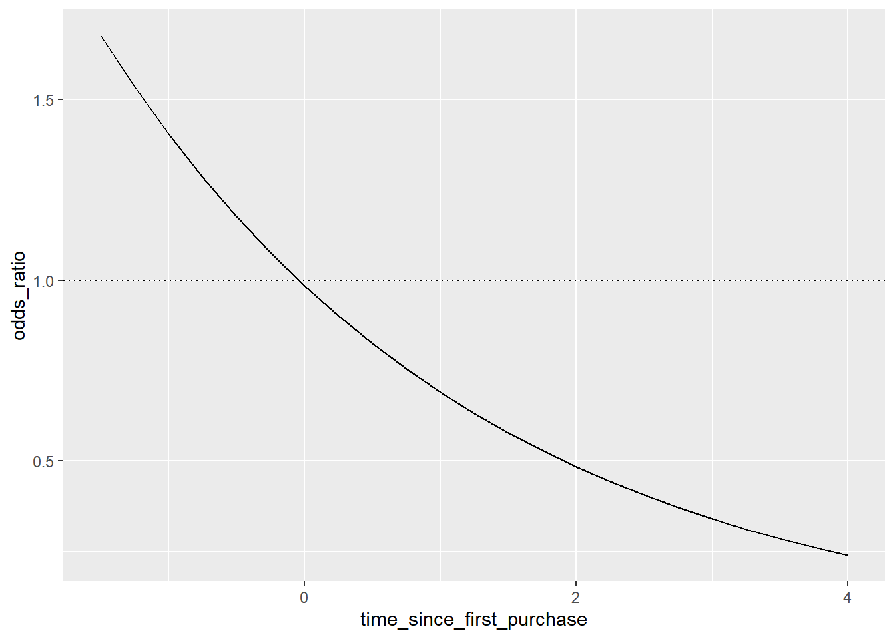
The predictions are below one, so the chance of churning is less than the chance of not churning
In the top-left, the chance of churning is about 2 times more than the chance of not churning.
14.4.2.4 Log odds ratio
One downside to probabilities and odds ratios for logistic regression predictions is that the prediction lines for each are curved. This makes it harder to reason about what happens to the prediction when you make a change to the explanatory variable.
The log odds ratio does have a linear relationship between predicted response and explanatory variable. That means that as the explanatory variable changes, you don’t see dramatic changes in the response metric - only linear changes.
Since the actual values of log odds ratio are less intuitive than (linear) odds ratio, for visualization purposes it’s usually better to plot the odds ratio and apply a log transformation to the y-axis scale.
# Update the data frame
prediction_data <- explanatory_data %>%
mutate(
has_churned = predict(mdl_churn_vs_relationship, explanatory_data, type = "response"),
most_likely_outcome = round(has_churned, digits = 0),
odds_ratio = has_churned / (1 - has_churned),
# Add the log odds ratio from odds_ratio
log_odds_ratio = log(odds_ratio),
# Add the log odds ratio using predict()
log_odds_ratio2 = predict(mdl_churn_vs_relationship, explanatory_data)
)
# See the result
prediction_data## # A tibble: 23 × 6
## time_since_first_purchase has_churned most_likely_outcome odds_ratio
## <dbl> <dbl> <dbl> <dbl>
## 1 -1.5 0.626 1 1.68
## 2 -1.25 0.605 1 1.53
## 3 -1 0.584 1 1.40
## 4 -0.75 0.562 1 1.29
## 5 -0.5 0.540 1 1.18
## 6 -0.25 0.518 1 1.08
## 7 0 0.496 0 0.985
## 8 0.25 0.474 0 0.901
## 9 0.5 0.452 0 0.825
## 10 0.75 0.430 0 0.755
## # ℹ 13 more rows
## # ℹ 2 more variables: log_odds_ratio <dbl>, log_odds_ratio2 <dbl>Update the plot to use a logarithmic y-scale.
# Update the plot
ggplot(prediction_data, aes(time_since_first_purchase, odds_ratio)) +
geom_line() +
geom_hline(yintercept = 1, linetype = "dotted") +
# Use a logarithmic y-scale
scale_y_log10()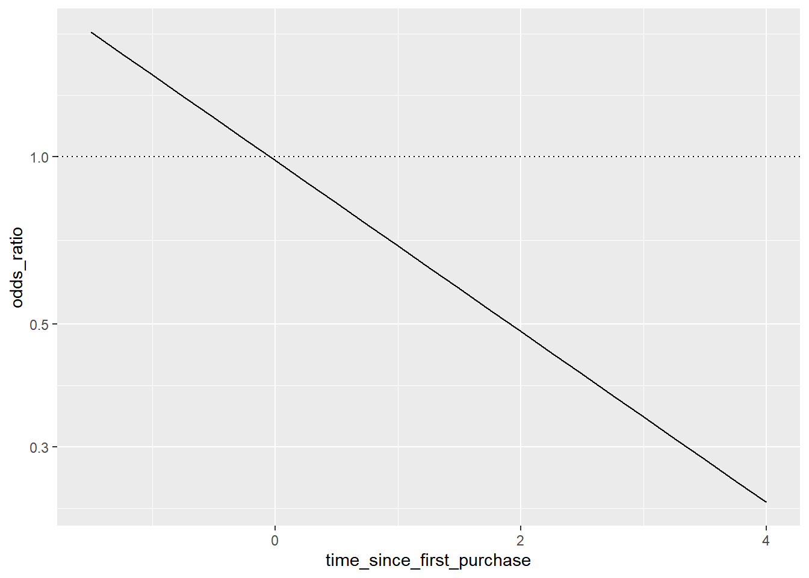
The linear relationship between predicted log odds ratio and the explanatory variable makes changes easier to reason about.
14.4.3 Quantify logistic regression fit
Confusion matrix
| actual false | actual true | |
|---|---|---|
| predicted false | correct (TN) | false negative (FN) |
| predicted true | false positive (FP) | correct (TP) |
Performance metrics
summary(confusion, event_level = "second")
Accuracy: the proportion of correct predictions.
- accuracy = (TN + TP) / (TN + FN + FP + TP)
Sensitivity: the proportion of true positives.
- sensitivity = TP / (FN + TP)
Specificity: the proportion of true negatives.
- specificity = TN / (TN + FP)
Both of them the higher the better. But there’s a trade off between sensitivity and specificity.
14.4.3.1 Calculate confusion matrix
predicted_response = round(fitted(model)) means predictions on the original dataset and get “most likely” responses.
# Get the actual responses from the dataset
actual_response <- churn$has_churned
# Get the "most likely" responses from the model
predicted_response <- round(fitted(mdl_churn_vs_relationship))
# Create a table of counts
outcomes <- table(predicted_response, actual_response)
# See the result
outcomes## actual_response
## predicted_response 0 1
## 0 112 76
## 1 88 12414.4.3.2 Measuring model performance
By converting confusion matrix to a yardstick confusion matrix object, you get methods for plotting and extracting performance metrics.
# Convert outcomes to a yardstick confusion matrix
confusion <- yardstick::conf_mat(outcomes)
# Plot the confusion matrix
autoplot(confusion)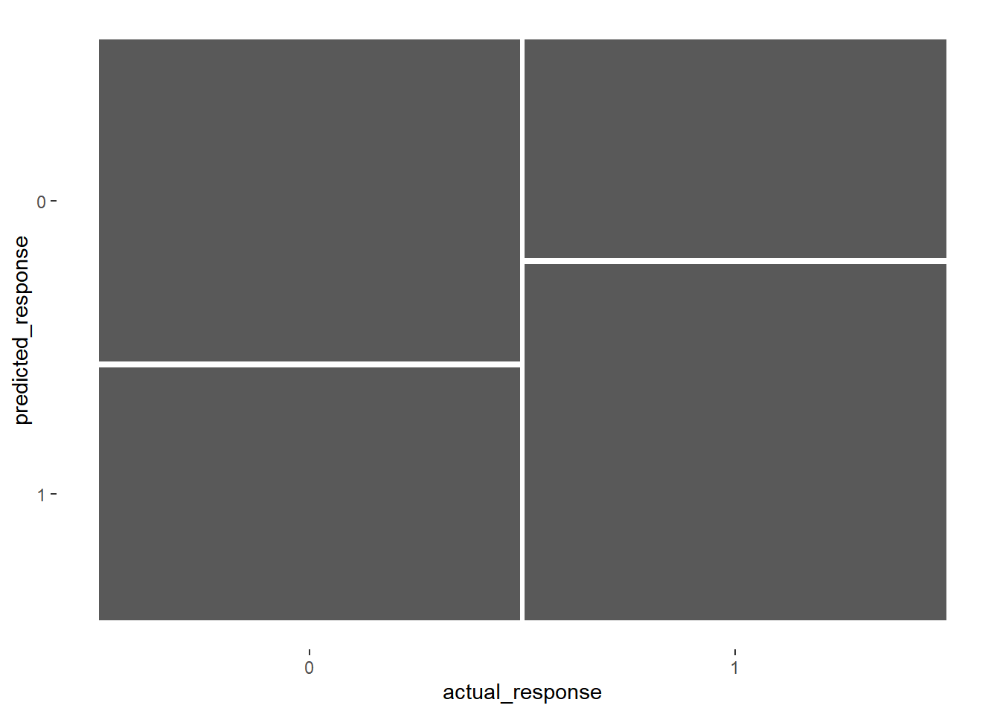
# Get performance metrics for the confusion matrix, the positive response is in the second column.
summary(confusion, event_level = "second")## # A tibble: 13 × 3
## .metric .estimator .estimate
## <chr> <chr> <dbl>
## 1 accuracy binary 0.59
## 2 kap binary 0.18
## 3 sens binary 0.62
## 4 spec binary 0.56
## 5 ppv binary 0.585
## 6 npv binary 0.596
## 7 mcc binary 0.180
## 8 j_index binary 0.180
## 9 bal_accuracy binary 0.59
## 10 detection_prevalence binary 0.53
## 11 precision binary 0.585
## 12 recall binary 0.62
## 13 f_meas binary 0.602